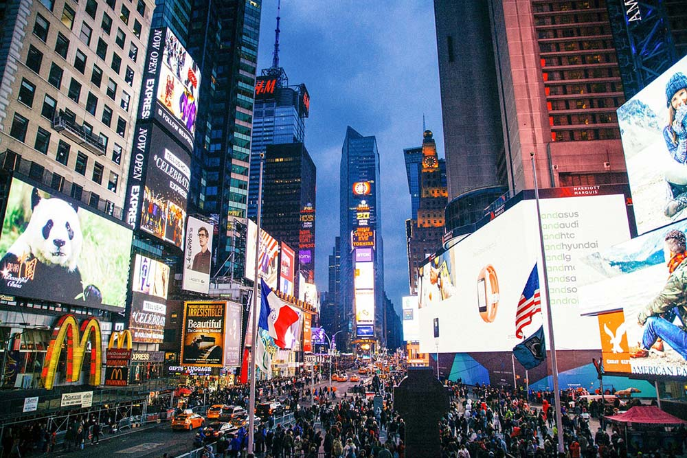

Miejsca do odwiedzenia
Times Square
Times Square, czyli plac w Nowym Jorku, który przyciąga ponad 50 milionów odwiedzających każdego roku. Jest to jeden z najbardziej ruchliwych obszarów dla pieszych na świecie. Miejsce to jest najbardziej znane z wielkich ledowych reklam i neonów. Nazwa Times Square pochodzi od New York Times Tower, czyli wieży, w której ulokowana jest siedziba gazety New York Times.
Czytaj więcejWorld Trade Center i Memoriał
 Na drapacz chmur World Trade Center można wjechać na wysokość około 380 metrów, gdzie znajduje się taras widokowy o nazwie One World Obserwatory.
Budynek jest tak duży, że stojąc koło niego, musiałem się naprawdę mocno wygiąć do tyłu, aby zobaczyć jego czubek.
Zaraz koło wieży znajduje się memoriał po drugim budynku, który został zniszczony podczas zamachów z 11 września. Są tam wypisane nazwiska wszystkich osób, które tego dnia zginęły.
Czytaj więcej
Na drapacz chmur World Trade Center można wjechać na wysokość około 380 metrów, gdzie znajduje się taras widokowy o nazwie One World Obserwatory.
Budynek jest tak duży, że stojąc koło niego, musiałem się naprawdę mocno wygiąć do tyłu, aby zobaczyć jego czubek.
Zaraz koło wieży znajduje się memoriał po drugim budynku, który został zniszczony podczas zamachów z 11 września. Są tam wypisane nazwiska wszystkich osób, które tego dnia zginęły.
Czytaj więcej
Oculus w Nowym Jorku
 Będąc już w pobliżu wieży World Trade Center, warto odwiedzić najdroższą w Nowym Jorku stację metra, połączoną z centrum handlowym.
Budowa tego miejsca pochłonęła dwa razy więcej pieniędzy, niż pierwotnie planowano. W 2004 roku budżet przewidywał 2 miliardy dolarów, jednak ostatecznie całość kosztowała 4 miliardy dolarów. To stawia Oculusa jako najdroższą stację kolejową na świecie.
Czytaj więcej
Będąc już w pobliżu wieży World Trade Center, warto odwiedzić najdroższą w Nowym Jorku stację metra, połączoną z centrum handlowym.
Budowa tego miejsca pochłonęła dwa razy więcej pieniędzy, niż pierwotnie planowano. W 2004 roku budżet przewidywał 2 miliardy dolarów, jednak ostatecznie całość kosztowała 4 miliardy dolarów. To stawia Oculusa jako najdroższą stację kolejową na świecie.
Czytaj więcej